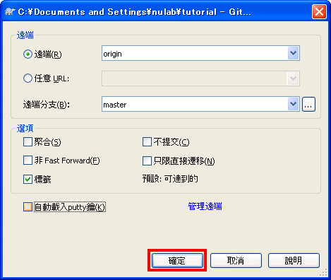
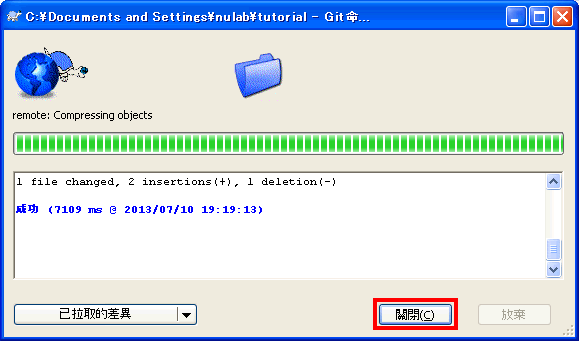
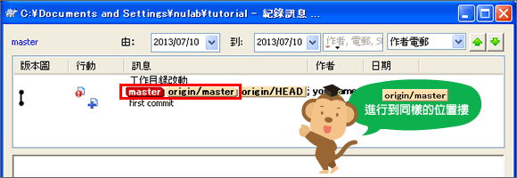
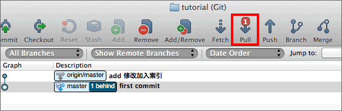
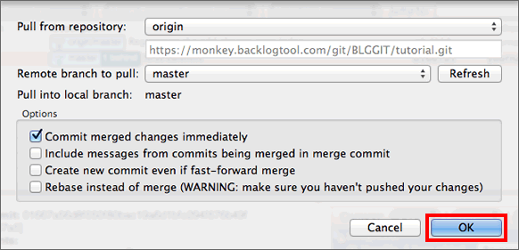
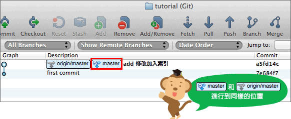

Windows
現在遠端數據庫已經與
「tutorial2」修改內容同步，我們來試試pull修改內容到「tutorial」。
在tutorial的操作
執行pull。對tutorial目錄按右鍵，從選單點「拉取」。

在tutorial的操作
會顯示以下畫面，點擊「確認」。

在tutorial的操作
顯示以下畫面表示開始執行pull，作業完畢後，請點一下「關閉」以結束畫面。

在tutorial的操作
按右鍵選單的「TortoiseGit」>
「顯示記錄」。如以下的畫面顯示「master」
與「origin/master」都在同ㄧ層的位置，代表
tutorial的本地端數據庫已經更新了，與遠端數據庫同步。

在tutorial的操作
打開sample.txt檔案確認內容。
連猴子都懂的Git命令
add 修改加入書籤
我們可以看到內容已添加至「add ：修改加入索引」中。
Mac
現在遠端數據庫已經與
「tutorial2」修改內容同步，我們來試試pull修改內容到「tutorial」。
在tutorial的操作
請點擊工具欄中的“pull”，以執行pull。

在tutorial的操作
當以下畫面顯示時，點一下「OK」。

在tutorial的操作
「master」的位置和遠端數據庫的「origin/master」進行到同樣的位置。這意味著，tutorial的本地端數據庫現在跟遠端數據庫同步，內容已經最新了。

在tutorial的操作
打開sample.txt檔案確認內容。
連猴子都懂的Git命令
add 修改加入索引
我們可以看到內容已添加至「add ：修改加入索引」中。
主控台
現在遠端數據庫已經與
「tutorial2」修改內容同步，我們來試試pull修改內容到「tutorial」。
使用pull命令以執行pull。如果您省略數據庫名稱的話，會對以origin命名的數據庫執行pull。
$ git pull <repository> <refspec>...
在tutorial的操作
請執行以下的命令。
$ git pull origin master
Username: <用戶名>
Password: <密碼>
From https://nulab.backlog.jp/git/BLG/tutorial
* branch master -> FETCH_HEAD
Updating ac56e47..3da09c1
Fast-forward
sample.txt | 1 +
1 files changed, 1 insertions(+), 0 deletions(-)
已經更新sample.txt檔案的內容。
在tutorial的操作
使用log命令確認歷史記錄。
$ git log
commit 3da09c1134a41f2bee854a413916e4ebcae7318d
Author: eguchi <eguchi@nulab.co.jp>
Date: Thu Jul 12 18:02:45 2012 +0900
添加add的說明
commit ac56e474afbbe1eab9ebce5b3ab48ac4c73ad60e
Author: eguchi <eguchi@nulab.co.jp>
Date: Thu Jul 12 18:00:21 2012 +0900
first commit
在「tutorial2」新添加的提交現在已被列表在這個數據庫的歷史記錄上。
在tutorial的操作
打開sample.txt檔案確認內容。
連猴子都懂的Git命令
add 修改加入書籤
我們可以看到內容已添加至「add ：修改加入索引」中。